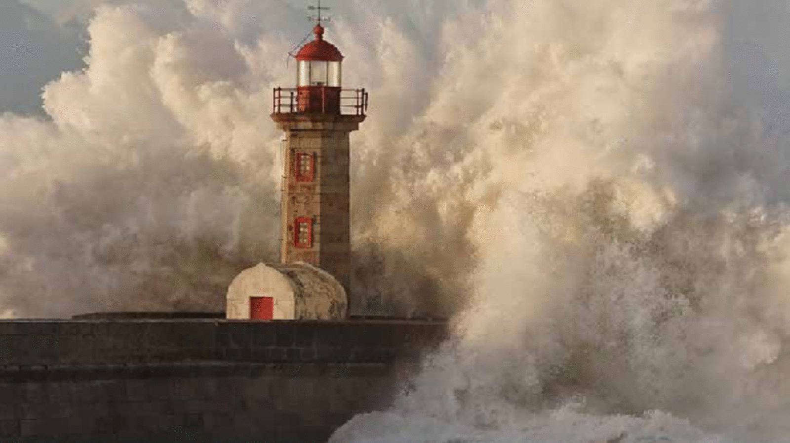

Research explained · EEA Report 01/2024
Climate change risks for Europe's energy system: what the European Climate Risk Assessment found
In 2024 the European Environment Agency published the first European Climate Risk Assessment (EUCRA). With Steffi Misconel and Wolfram Sparber, I wrote its chapter on energy. Heatwaves, droughts and floods already disrupt energy supply in parts of Europe, and the risk grows with every degree of warming, most of all in southern Europe.

What is the European Climate Risk Assessment?
EUCRA is the EEA's assessment of how climate change threatens Europe's people, economy and infrastructure, sector by sector. Each chapter identifies the major climate risks and rates them for severity, confidence, policy readiness and urgency. The authors of each chapter made the first assessment, and the final ratings are the consensus of the EUCRA risk review panel.
Our chapter looks at four parts of the energy system: energy demand; transmission, distribution and storage; power generation and conversion; and primary energy carriers such as oil, gas and coal.
How climate change affects energy demand
Warmer temperatures reduce heating demand in colder countries and raise cooling demand in warmer ones. Heating degree days are falling and cooling degree days are rising across Europe. Cooling is still a small share of energy use, except in southern Europe.
Climate change alone is expected to raise EU-wide average electricity demand by less than 5% by mid-century. Peak demand is the larger concern, because demand for cooling during heatwaves will grow, especially in the south. Over the same period, electrification, urbanisation and lifestyle changes could double electricity demand by 2060. Less water also means more energy for irrigation, households and desalination.
How climate change affects grids and storage
- High temperatures reduce how much electricity power lines and transformers can carry.
- Droughts and low river levels slow fuel transport by river and raise its cost.
- Floods, windstorms, forest fires and ice damage energy infrastructure. Severe weather has already caused blackouts in Europe.
- Sea-level rise and storm surges threaten energy facilities on the coast.
The grid must also expand to carry more renewable electricity. Closer links between electricity and gas networks can help with storage, and some gas pipelines may be converted to hydrogen.
How climate change affects power plants and renewables
Thermal power plants, both fossil and nuclear, lose efficiency in hot weather and need cooling water that droughts make scarce. Climate change could cut the usable cooling water capacity of European power plants by more than 15% by mid-century. Heatwaves have already forced France to shut down nuclear reactors for cooling reasons. Carbon capture would make plants less efficient and increase their water needs.
Renewables are exposed too. Hydropower potential will drop in regions that become drier. Solar panels lose a little efficiency at high temperatures and can be badly damaged by hail. Wind turbines stop producing in very low or very high winds.
Fossil fuels still covered 81% of Europe's primary energy needs, much of it imported, at the time of the assessment. Their use has fallen since 2005 and declines further in all climate mitigation scenarios, with renewables growing fastest.
The two major climate risks for energy in Europe
The chapter rates two risks in detail. The table shows how their severity grows over time.
| Risk | 2021–2040 | 2041–2060 | 2081–2100 |
|---|---|---|---|
| Energy disruption from flood damage to grids and storage | Substantial | Critical | Critical |
| Electricity disruption from heat and drought, all of Europe | Limited | Substantial | Critical (high warming), substantial (low warming) |
| Electricity disruption from heat and drought, southern Europe | Substantial | Critical | Critical |
Floods already interrupt energy supply, though the outages are usually short. Climate change will raise flood risk in most of Europe. The panel rated EU policy readiness for this risk as advanced, thanks to existing rules on critical energy infrastructure, and set the urgency to further investigation.
Heat and drought are the more pressing risk in the south. A long drought can cut hydropower and cooling water at the same time as a heatwave pushes up demand for air conditioning, and that combination can lead to power cuts. For southern Europe the panel concluded that more action is needed. EU policy is better prepared to protect energy supply than to manage demand during extreme heat.
Adapting the energy system to climate change
Power plants, grids and pipelines stay in service for decades, so decisions made now must account for the climate they will face later. The chapter recommends that every EU country include climate impacts on its current and future energy system in its national energy and climate plan and its national adaptation strategy. Useful measures include infrastructure maintenance, energy storage, energy efficiency, demand-side management and smart grids.
Adaptation has limits. Some are technical, such as plant designs that cannot be changed. Some are economic, such as the cost of new infrastructure. Others come from competing water uses and lack of space for new grids and renewables. Because a stable energy supply underpins almost every other sector, energy disruptions can spread to the economy and to human health. Adaptation plans also need to protect households at risk of energy poverty.
For energy system modellers, climate risk adds another layer of uncertainty to long-term scenarios, on top of the uncertainty in costs and demand that we discuss in our article on the challenges of energy system models. Faster tools such as machine learning surrogate models make it practical to test many more climate and weather scenarios.
EU policies that address climate risks to energy
- Critical Entities Resilience Directive: in force since January 2023. Member States must identify their critical entities by July 2026, and those entities must then take measures to increase their resilience.
- Regulation on Risk-Preparedness in the Electricity Sector (2019/941): requires operators to assess and prepare for risks to electricity supply, including extreme weather.
- EU strategy on energy system integration (2020): aims at a more integrated, flexible and interconnected energy system.
- Energy union strategy (2015) and the Clean energy for all Europeans package (2016), which set the framework for energy security and the 2030 targets.
Frequently asked questions
How does climate change affect the energy system in Europe?
According to the European Climate Risk Assessment, the main risks are higher cooling demand, lower hydropower output in some regions, lower efficiency of thermal power plants and power lines in hot weather, and damage to energy infrastructure from floods, storms, wildfires and other extreme events.
Which part of Europe faces the highest climate risk to energy supply?
Southern Europe. Heat and drought there already cause substantial risk of electricity disruption, rated critical by mid-century. Northern Europe faces both risks and some opportunities, such as lower heating demand.
Will climate change increase electricity demand in Europe?
Climate change alone is expected to raise EU-wide average electricity demand by less than 5% by mid-century, but peak demand for cooling will rise, especially in southern Europe. Electrification, urbanisation and lifestyle changes weigh more, and together they could double electricity demand by 2060.